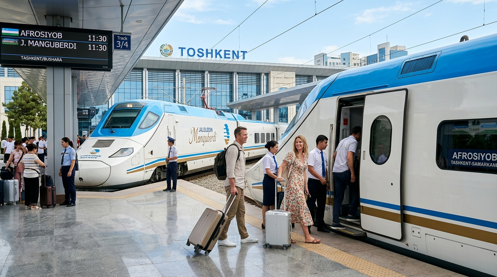
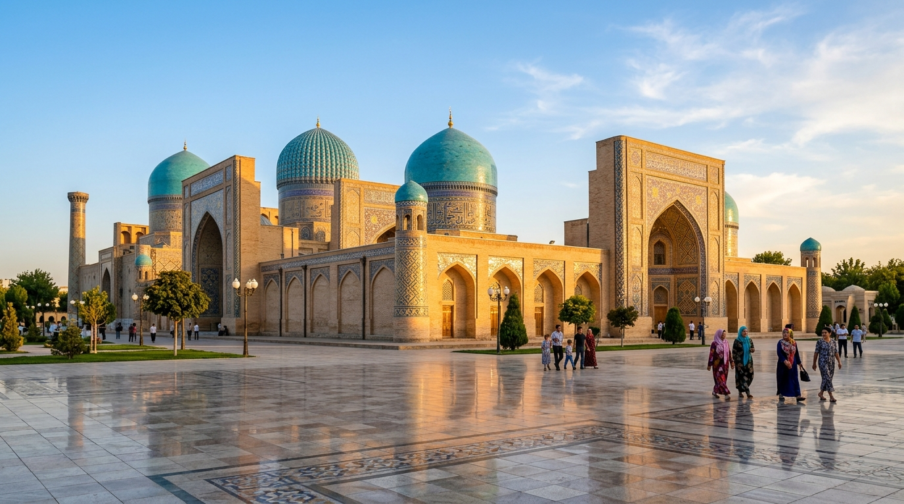
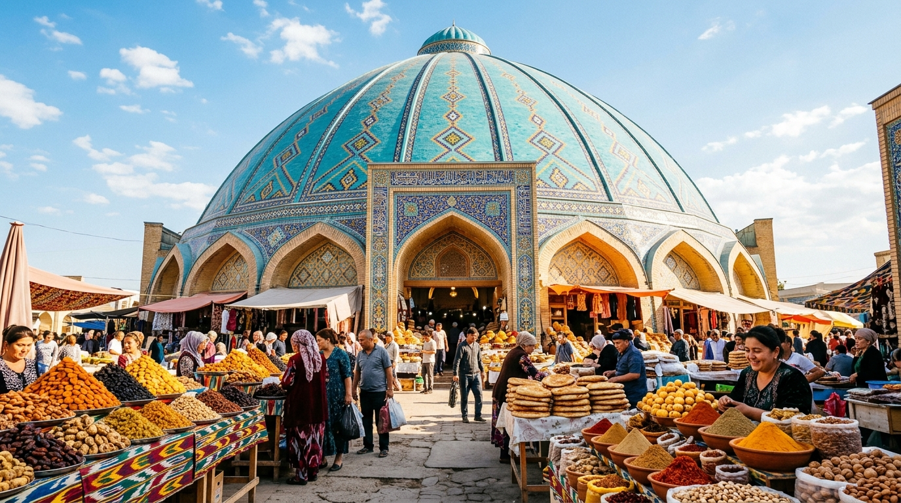
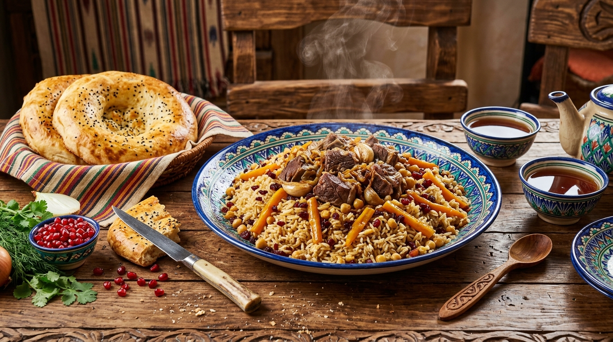

Tour esclusivi alla scoperta dei tesori di Tashkent con Sardor, guida certificata con perfetta padronanza dell'italiano. Inoltre, servizio ufficiale di prenotazione biglietti per i treni veloci Afrosiyob e Jaloliddin Manguberdi verso Samarcanda e Bukhara.
Sardor possiede il diploma di guida turistica di Stato con conoscenza fluente e impeccabile dell'italiano.
Itinerari autentici e senza fretta: dal Corano di Othman del VII secolo alle stazioni d'arte della metropolitana.
Accesso prioritario e garanzia dei biglietti per i treni ad alta velocità verso Samarcanda, Bukhara e Khiva.
Supporto diretto via WhatsApp con Sardor prima e durante il soggiorno nella capitale uzbeka.
I tour guidati con Sardor si concentrano sull'approfondimento della magnifica Tashkent. Per proseguire il vostro viaggio verso le altre perle dell'Uzbekistan, offriamo il servizio ufficiale di prenotazione con posti riservati garantiti.

Stazione Centrale di TashkentIl celebre treno proiettile Talgo 250 a 250 km/h. Collega Tashkent a Samarcanda in sole 2 ore e 8 minuti e raggiunge Bukhara in 3 ore e 45 minuti con il massimo comfort europeo, aria condizionata e servizio a bordo.
Il nuovissimo treno rapido espresso dedicato all'eroe nazionale Manguberdi, che garantisce collegamenti veloci e moderni verso l'ovest dell'Uzbekistan (Khiva e Urgench). Carrozze silenziose, sedute ergonomiche e Wi-Fi.
Una metropoli millenaria unica al mondo: crocevia tra la grandiosità della Via della Seta, il fascino sovietico e l'eleganza contemporanea.

Sacro & MillenarioIl cuore spirituale di Tashkent. Custodisce il leggendario Corano di Othman del VII secolo su pergamena di gazzella, uno dei manoscritti islamici più antichi al mondo.

AutenticitàLa gigantesca cupola turchese accoglie il mercato più vivo dell'Asia Centrale: spezie profumate, piramidi di frutta secca, pane tandir appena sfornato e botteghe di maestri artigiani.

Sapori UNESCOIl più grande Centro del Plov dell'Asia Centrale: enormi calderoni in ghisa che sprigionano il profumo di cumino, riso dorato e carni tenere, accompagnati da tè verde e pane caldo.
Programmi studiati per viaggiatori esigenti che desiderano scoprire la vera anima di Tashkent con una guida locale dedicata.
Il tour completo definitivo. Visita il complesso spirituale di Hazrati Imam con l'antichissimo Corano di Othman, esplora gli angoli più autentici della Città Vecchia, vivi i colori del Bazar Chorsu e gusta il celebre plov in una choykhana storica.
Un affascinante viaggio tra il modernismo sovietico e la Tashkent contemporanea. Esplora le 6 stazioni più spettacolari della metropolitana sotterranea, la piazza di Tamerlano e l'iconico Hotel Uzbekistan.
Scopri la capitale quando le temperature si rinfrescano e le cupole si illuminano. Visita la suggestiva Moschea Minore in marmo bianco, cena a base di deliziosi spiedini shashlik e somsa, e spettacolo serale di fontane musicali.
«Tashkent è una città dalle mille anime: millenaria nei suoi manoscritti, monumentale nelle sue piazze e incredibilmente calorosa nella sua gente. Sarò felice di accompagnarvi personalmente con un italiano fluente e la sincera ospitalità della mia terra.»
Sardor è una guida turistica abilitata con diploma ufficiale rilasciato dal Ministero del Turismo della Repubblica dell'Uzbekistan. Parla italiano ad altissimo livello, unendo un lessico ricco ed elegante a una profonda conoscenza storica, artistica e culinaria dell'Asia Centrale.
Oltre all'italiano, Sardor padroneggia fluentemente l'inglese, il russo e l'uzbeko madrelingua. Ha accompagnato numerosi viaggiatori italiani, famiglie e gruppi culturali, curando ogni minimo dettaglio: dagli aneddoti storici sui grandi emiri fino alla scelta delle migliori choykhana tradizionali.
Scegli le esperienze che desideri includere. Riceverai un preventivo chiaro e personalizzato direttamente su WhatsApp da Sardor entro 2 ore.
I cittadini italiani ed europei viaggiano senza visto fino a 30 giorni. È richiesto solo il passaporto in corso di validità (almeno 3 mesi residui).
Voli diretti comodi con Uzbekistan Airways (da Milano Malpensa e Roma Fiumicino) per l'aeroporto internazionale di Tashkent, oltre a ottime connessioni Turkish Airlines.
I treni ad alta velocità partono dalle stazioni di Tashkent. Viaggiare in treno in Uzbekistan è pulito, confortevole, puntuale e sicuro.
Tashkent è considerata una delle capitali più sicure al mondo. La polizia turistica è sempre presente, amichevole e pronta ad assistere.
La moneta è il Som uzbeko (UZS). Bancomat e carte di credito (Visa e Mastercard) sono ampiamente diffuse; è comodo avere contanti per il Bazar Chorsu.
Scrivici su WhatsApp al +998 93 885 03 09 o compila il modulo sottostante. Ti risponderemo tempestivamente in italiano con tutti i dettagli!